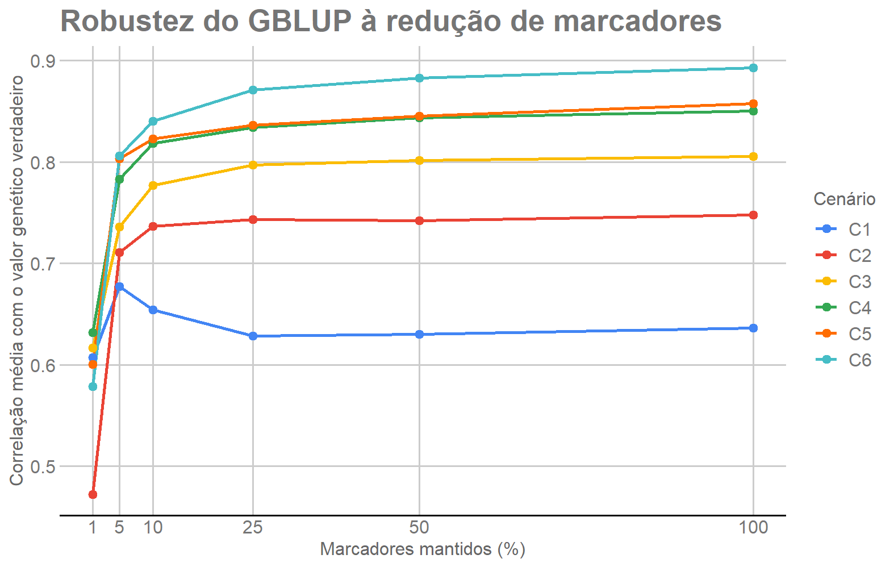

Last updated: 2026-09-10
Checks: 6 1
Knit directory:
Robustez-Predicao-Genomica-n-p/
This reproducible R Markdown analysis was created with workflowr (version 1.7.2). The Checks tab describes the reproducibility checks that were applied when the results were created. The Past versions tab lists the development history.
The R Markdown file has unstaged changes. To know which version of
the R Markdown file created these results, you’ll want to first commit
it to the Git repo. If you’re still working on the analysis, you can
ignore this warning. When you’re finished, you can run
wflow_publish to commit the R Markdown file and build the
HTML.
Great job! The global environment was empty. Objects defined in the global environment can affect the analysis in your R Markdown file in unknown ways. For reproduciblity it’s best to always run the code in an empty environment.
The command set.seed(20260908) was run prior to running
the code in the R Markdown file. Setting a seed ensures that any results
that rely on randomness, e.g. subsampling or permutations, are
reproducible.
Great job! Recording the operating system, R version, and package versions is critical for reproducibility.
Nice! There were no cached chunks for this analysis, so you can be confident that you successfully produced the results during this run.
Great job! Using relative paths to the files within your workflowr project makes it easier to run your code on other machines.
Great! You are using Git for version control. Tracking code development and connecting the code version to the results is critical for reproducibility.
The results in this page were generated with repository version 3936938. See the Past versions tab to see a history of the changes made to the R Markdown and HTML files.
Note that you need to be careful to ensure that all relevant files for
the analysis have been committed to Git prior to generating the results
(you can use wflow_publish or
wflow_git_commit). workflowr only checks the R Markdown
file, but you know if there are other scripts or data files that it
depends on. Below is the status of the Git repository when the results
were generated:
Ignored files:
Ignored: .Rproj.user/
Ignored: .local/
Ignored: renv/library/
Ignored: renv/staging/
Unstaged changes:
Modified: _dependencies.R
Modified: analysis/02_gblup.Rmd
Note that any generated files, e.g. HTML, png, CSS, etc., are not included in this status report because it is ok for generated content to have uncommitted changes.
These are the previous versions of the repository in which changes were
made to the R Markdown (analysis/02_gblup.Rmd) and HTML
(docs/02_gblup.html) files. If you’ve configured a remote
Git repository (see ?wflow_git_remote), click on the
hyperlinks in the table below to view the files as they were in that
past version.
| File | Version | Author | Date | Message |
|---|---|---|---|---|
| Rmd | eb6c91a | WevertonGomesCosta | 2026-09-09 | Complete marker reduction robustness analysis |
| html | eb6c91a | WevertonGomesCosta | 2026-09-09 | Complete marker reduction robustness analysis |
| html | c8bee6d | WevertonGomesCosta | 2026-09-08 | Build site. |
| Rmd | ef0d40d | WevertonGomesCosta | 2026-09-08 | Define initial marker reduction design |
| html | 73e1863 | WevertonGomesCosta | 2026-09-08 | Build site. |
| Rmd | 7307330 | WevertonGomesCosta | 2026-09-08 | Configure initial tutorial structure and simulated data |
Este é o segundo módulo do tutorial. O objetivo é mostrar como o
GBLUP aditivo é utilizado para predizer valores
genéticos e como sua capacidade preditiva muda quando o número de
marcadores, representado por p, é reduzido.
O desenho experimental já foi fixado no Módulo 1. Nesta etapa:
O resultado científico oficial desta etapa está armazenado em
output/gblup/module02_gblup_results.rds e segue o contrato
M02-p-v1. O tutorial não altera esse objeto. Primeiro
mostramos o procedimento com uma combinação de cenário e fold e, depois,
utilizamos o objeto oficial para apresentar os resultados
consolidados.
GBLUP significa Genomic Best Linear Unbiased Prediction. O método utiliza a semelhança genômica entre indivíduos para predizer seus efeitos genéticos.
O modelo utilizado neste projeto pode ser escrito como
\[ \mathbf{y} = \mathbf{1}\mu + \mathbf{Z}\mathbf{u} + \mathbf{e}, \]
em que:
Os efeitos genéticos são modelados por
\[ \mathbf{u} \sim N\left( \mathbf{0}, \mathbf{G}\sigma_g^2 \right), \]
enquanto os resíduos seguem
\[ \mathbf{e} \sim N\left( \mathbf{0}, \mathbf{I}\sigma_e^2 \right). \]
A matriz \(\mathbf{G}\) é a matriz de relacionamento genômico. Ela resume a semelhança entre os indivíduos a partir dos SNPs. O parâmetro \(\sigma_g^2\) representa a variância genética aditiva e \(\sigma_e^2\) representa a variância residual.
Se dois indivíduos apresentam perfis genotípicos semelhantes, sua relação genômica tende a ser maior. O GBLUP utiliza essa estrutura para compartilhar informação entre indivíduos observados e candidatos à predição.
Neste projeto, \(\mathbf{G}\) é
construída com sommer::A.mat(). Quando o número de
marcadores é reduzido, a matriz é reconstruída usando somente os SNPs do
painel corrente. Portanto, reduzir p altera a própria
estrutura de relacionamento fornecida ao modelo.
Os 1.000 indivíduos já são considerados genotipados antes da validação. Assim, os genótipos dos 800 indivíduos de treinamento e dos 200 indivíduos de teste podem participar de \(\mathbf{G}\).
Entretanto, o fenótipo dos 200 indivíduos de teste é substituído por
NA antes do ajuste. Dessa forma:
Essa é a condição transdutiva adotada para o GBLUP neste projeto. Ela deve ser distinguida da utilização indevida do fenótipo de teste: nenhum fenótipo do conjunto de teste é fornecido ao modelo.
O Módulo 1 reuniu dados, níveis de redução de p e folds
em um único objeto. Também carregamos o resultado oficial do M02, usado
para validar o contrato, recuperar metadados da execução e apresentar os
resultados consolidados.
arquivo_m01 <- "output/dados_desenho/desenho_analise.rds"
arquivo_m02 <- "output/gblup/module02_gblup_results.rds"
stopifnot(
file.exists(arquivo_m01),
file.exists(arquivo_m02)
)
dados <- readRDS(
arquivo_m01
)
resultado_m02 <- readRDS(
arquivo_m02
)
stopifnot(
identical(
dim(dados$genotipo),
c(1000L, 4010L)
),
identical(
dim(dados$fenotipo),
c(1000L, 6L)
),
identical(
dim(dados$valor_genetico),
c(1000L, 6L)
),
length(dados$folds) == 5L,
identical(
resultado_m02$versao,
"M02-p-v1"
),
nrow(resultado_m02$resultados) == 180L,
nrow(resultado_m02$resumo) == 36L
)As verificações garantem que o tutorial está usando exatamente o desenho do M01 e o resultado científico congelado do M02.
A tabela abaixo separa o papel de cada componente antes de iniciar o ajuste.
resumo_objetos <- data.frame(
Objeto = c(
"Fenótipos",
"Valores genéticos verdadeiros",
"Genótipos",
"Folds",
"Resultado oficial M02"
),
Estrutura = c(
paste(
dim(dados$fenotipo),
collapse = " x "
),
paste(
dim(dados$valor_genetico),
collapse = " x "
),
paste(
dim(dados$genotipo),
collapse = " x "
),
paste0(
length(dados$folds),
" folds"
),
paste0(
nrow(resultado_m02$resultados),
" resultados"
)
),
Uso = c(
"Resposta disponível somente no treinamento",
"Avaliação após a predição",
"Construção da matriz G",
"Separação fixa entre treino e teste",
"Resultados científicos consolidados"
)
)
kableExtra::kbl(
resumo_objetos,
caption = "Objetos utilizados no módulo de GBLUP",
align = c(
"l",
"l",
"l"
)
) |>
kableExtra::kable_styling(
bootstrap_options = c(
"striped",
"hover",
"condensed",
"responsive"
),
full_width = FALSE
)| Objeto | Estrutura | Uso |
|---|---|---|
| Fenótipos | 1000 x 6 | Resposta disponível somente no treinamento |
| Valores genéticos verdadeiros | 1000 x 6 | Avaliação após a predição |
| Genótipos | 1000 x 4010 | Construção da matriz G |
| Folds | 5 folds | Separação fixa entre treino e teste |
| Resultado oficial M02 | 180 resultados | Resultados científicos consolidados |
Os fenótipos e os valores genéticos verdadeiros possuem seis colunas,
uma para cada cenário. A matriz genotípica possui 4.010 colunas, uma
para cada SNP. O objeto resultado_m02 não é usado para
treinar o exemplo; ele preserva o resultado oficial e os metadados da
execução já concluída.
Cada fold deve manter 800 indivíduos no treinamento e 200 no teste.
Para deixar a lógica explícita, percorremos os cinco folds com um
for.
resumo_folds <- data.frame(
Fold = seq_along(dados$folds),
Treinamento = integer(
length(dados$folds)
),
Teste = integer(
length(dados$folds)
),
Sobreposicao = integer(
length(dados$folds)
)
)
for (k in seq_along(dados$folds)) {
treino_k <- dados$folds[[k]]$treino
teste_k <- dados$folds[[k]]$teste
resumo_folds$Treinamento[k] <- length(
treino_k
)
resumo_folds$Teste[k] <- length(
teste_k
)
resumo_folds$Sobreposicao[k] <- length(
intersect(
treino_k,
teste_k
)
)
}
stopifnot(
all(
resumo_folds$Treinamento == 800L
),
all(
resumo_folds$Teste == 200L
),
all(
resumo_folds$Sobreposicao == 0L
)
)
kableExtra::kbl(
resumo_folds,
caption = "Partição fixa utilizada pelo GBLUP"
) |>
kableExtra::kable_styling(
bootstrap_options = c(
"striped",
"hover",
"condensed",
"responsive"
),
full_width = FALSE
)| Fold | Treinamento | Teste | Sobreposicao |
|---|---|---|---|
| 1 | 800 | 200 | 0 |
| 2 | 800 | 200 | 0 |
| 3 | 800 | 200 | 0 |
| 4 | 800 | 200 | 0 |
| 5 | 800 | 200 | 0 |
Todos os folds reproduzem a divisão 800/200 definida no M01 e apresentam sobreposição igual a zero. Portanto, nenhum indivíduo pertence simultaneamente ao conjunto de treinamento e ao conjunto de teste dentro do mesmo fold.
pOs seis tamanhos de painel também são herdados diretamente do M01.
niveis_p <- dados$niveis_p
kableExtra::kbl(
niveis_p,
caption = "Níveis de redução do número de marcadores",
col.names = c(
"Proporção mantida",
"Marcadores mantidos",
"Número de SNPs"
)
) |>
kableExtra::kable_styling(
bootstrap_options = c(
"striped",
"hover",
"condensed",
"responsive"
),
full_width = FALSE
)| Proporção mantida | Marcadores mantidos | Número de SNPs |
|---|---|---|
| 1.00 | 100% | 4010 |
| 0.50 | 50% | 2005 |
| 0.25 | 25% | 1003 |
| 0.10 | 10% | 401 |
| 0.05 | 5% | 201 |
| 0.01 | 1% | 40 |
O painel completo contém 4.010 SNPs. Os painéis reduzidos mantêm 50%, 25%, 10%, 5% e 1% dos marcadores, correspondendo a 2.005, 1.003, 401, 201 e 40 SNPs, respectivamente.
Para entender cada etapa sem esconder operações em funções auxiliares, utilizaremos como exemplo a combinação C1 × Fold 1. Os blocos de ajuste são mostrados integralmente, mas não são executados automaticamente durante a construção do site, pois o ajuste do GBLUP é computacionalmente mais pesado que a preparação dos dados.
Quem quiser reproduzir o exemplo pode executar os blocos desta seção
sequencialmente em uma sessão R com o ambiente renv do
projeto restaurado.
Primeiro escolhemos a coluna fenotípica de C1 e recuperamos os índices de treino e teste do Fold 1. A semente do exemplo é lida do resultado oficial para preservar o registro da execução correspondente.
cenario_exemplo <- "C1"
fold_exemplo <- 1L
treino <- dados$folds[[fold_exemplo]]$treino
teste <- dados$folds[[fold_exemplo]]$teste
X_completo <- dados$genotipo
y_exemplo <- dados$fenotipo[
,
cenario_exemplo
]
g_verdadeiro <- dados$valor_genetico[
,
cenario_exemplo
]
linha_seed <- resultado_m02$resultados[
resultado_m02$resultados$cenario ==
cenario_exemplo &
resultado_m02$resultados$fold ==
fold_exemplo &
resultado_m02$resultados$percentual_p ==
100,
,
drop = FALSE
]
stopifnot(
nrow(linha_seed) == 1L
)
seed_exemplo <- as.integer(
linha_seed$seed
)
stopifnot(
length(treino) == 800L,
length(teste) == 200L,
length(
intersect(
treino,
teste
)
) == 0L,
nrow(X_completo) == 1000L,
ncol(X_completo) == 4010L
)Nesse ponto, X_completo contém os genótipos dos 1.000
indivíduos. Os vetores treino e teste apenas
indicam quais fenótipos podem ser usados no ajuste e quais indivíduos
serão reservados para avaliação.
A matriz de relacionamento é construída com os 4.010 SNPs. Como todos
os indivíduos já são genotipados, as 1.000 linhas de
X_completo participam dessa etapa.
G_completa <- sommer::A.mat(
X_completo
)
rownames(G_completa) <- rownames(
X_completo
)
colnames(G_completa) <- rownames(
X_completo
)
stopifnot(
identical(
dim(G_completa),
c(1000L, 1000L)
),
all(
is.finite(G_completa)
)
)O resultado é uma matriz 1000 × 1000. Cada elemento
representa o relacionamento genômico estimado entre dois indivíduos a
partir dos SNPs do painel completo.
Agora montamos o data.frame fornecido ao
sommer. A operação central é substituir por NA
os 200 fenótipos correspondentes ao Fold 1 de teste.
ids <- rownames(
X_completo
)
dados_modelo <- data.frame(
y = as.numeric(
y_exemplo
),
id = factor(
ids,
levels = ids
)
)
dados_modelo$y[
teste
] <- NA_real_
stopifnot(
sum(
is.na(
dados_modelo$y
)
) == 200L,
all(
is.finite(
dados_modelo$y[
treino
]
)
)
)Essa é a separação essencial entre informação disponível e informação
reservada. Os 200 indivíduos de teste continuam em
dados_modelo para que seus níveis de id possam
receber predições, mas seus fenótipos não informam o ajuste.
sommer::mmes()Com G_completa e os fenótipos de teste ocultos,
ajustamos o modelo aditivo. O protocolo congelado utiliza
nIters = 20.
ajuste_completo <- sommer::mmes(
y ~ 1,
random = ~
vsm(
ism(id),
Gu = G_completa
),
rcov = ~ units,
nIters = 20L,
data = dados_modelo,
verbose = FALSE,
dateWarning = FALSE
)O modelo estima a média geral, a variância genética, a variância
residual e os efeitos aditivos associados aos 1.000 níveis de
id.
O componente uList contém os efeitos aleatórios
preditos. Construímos a matriz de incidência dos indivíduos e
recuperamos a contribuição aditiva de cada um.
efeito_individuo <- as.matrix(
ajuste_completo$uList[[1L]]
)
Z_id <- model.matrix(
~ id - 1,
data = dados_modelo
)
valor_aditivo <- as.numeric(
Z_id %*%
efeito_individuo[
,
1L,
drop = FALSE
]
)
intercepto <- as.numeric(
ajuste_completo$b
)[1L]
predicao_completa <- intercepto +
valor_aditivo
predicao_teste_completa <- predicao_completa[
teste
]
stopifnot(
length(
predicao_teste_completa
) == 200L,
all(
is.finite(
predicao_teste_completa
)
)
)As 200 posições de predicao_teste_completa correspondem
aos indivíduos cujo fenótipo foi ocultado antes do ajuste.
Como os dados são simulados, conhecemos o valor genético verdadeiro dos indivíduos de teste. Ele é acessado somente agora, depois que o ajuste e as predições foram concluídos.
A métrica principal é
\[ r = \operatorname{cor} \left( \mathbf{g}, \widehat{\mathbf{g}} \right), \]
em que \(\mathbf{g}\) contém os valores genéticos verdadeiros e \(\widehat{\mathbf{g}}\) contém as predições.
observado <- as.numeric(
g_verdadeiro[
teste
]
)
predito <- as.numeric(
predicao_teste_completa
)
r_completo <- cor(
observado,
predito
)Quanto maior r_completo, maior a associação linear entre
o valor genético verdadeiro e a predição do modelo.
Também calculamos RMSE, MAE, viés, inclinação de calibração e \(R^2\) preditivo. As fórmulas são escritas diretamente para que seu significado fique visível.
rmse_completo <- sqrt(
mean(
(
observado -
predito
)^2
)
)
mae_completo <- mean(
abs(
observado -
predito
)
)
bias_completo <- mean(
predito -
observado
)
slope_completo <- as.numeric(
coef(
lm(
observado ~ predito
)
)[2L]
)
soma_quadrados_total <- sum(
(
observado -
mean(
observado
)
)^2
)
r2_completo <- 1 -
sum(
(
observado -
predito
)^2
) /
soma_quadrados_total
metricas_completo <- data.frame(
r = r_completo,
RMSE = rmse_completo,
MAE = mae_completo,
Bias = bias_completo,
Slope = slope_completo,
R2 = r2_completo
)
metricas_completoA correlação mede associação linear; RMSE e MAE medem magnitude do erro; o viés mede deslocamento médio; a inclinação avalia calibração; e o \(R^2\) preditivo compara o erro das predições com a variação dos valores verdadeiros.
O GBLUP produz efeitos genéticos dos indivíduos, e não diretamente um coeficiente para cada SNP. Para criar um ranking de marcadores, recuperamos efeitos de SNP compatíveis com os valores aditivos preditos no conjunto de treinamento.
Seja \(\mathbf{X}_T\) a matriz dos 800 indivíduos de treinamento. Cada coluna é centralizada usando a média calculada nesses mesmos 800 indivíduos:
\[ \mathbf{M}_T = \mathbf{X}_T - \mathbf{1}\bar{\mathbf{x}}_T'. \]
X_treino <- X_completo[
treino,
,
drop = FALSE
]
M_treino <- sweep(
X_treino,
2L,
colMeans(
X_treino
),
FUN = "-"
)
stopifnot(
nrow(M_treino) == 800L,
ncol(M_treino) == 4010L,
max(
abs(
colMeans(
M_treino
)
)
) < 1e-12
)A centralização usa exclusivamente os indivíduos de treinamento. Nenhum valor genético verdadeiro e nenhum fenótipo de teste entra nessa operação.
A centralização implica uma dependência linear entre as 800 linhas. Por isso,
\[ \mathbf{M}_T\mathbf{M}_T' \]
é singular. Na análise congelada, o posto observado foi 799 nas 30 combinações de cenário e fold.
Construímos essa matriz e sua decomposição espectral:
MMt <- tcrossprod(
M_treino
)
decomposicao <- eigen(
MMt,
symmetric = TRUE
)
tolerancia <- max(
dim(MMt)
) *
max(
decomposicao$values
) *
.Machine$double.eps
manter <- decomposicao$values >
tolerancia
posto_MMt <- sum(
manter
)
stopifnot(
posto_MMt == 799L
)Autovalores menores que a tolerância numérica não são invertidos. Isso evita tentar calcular a inversa comum de uma matriz singular.
O vetor de efeitos dos SNPs é obtido por
\[ \widehat{\boldsymbol{\beta}} = \mathbf{M}_T' \left( \mathbf{M}_T\mathbf{M}_T' \right)^+ \widehat{\mathbf{u}}_T, \]
em que \(+\) indica a pseudoinversa de Moore–Penrose e \(\widehat{\mathbf{u}}_T\) contém os efeitos aditivos preditos dos indivíduos de treinamento.
u_treino <- valor_aditivo[
treino
]
autovetores_validos <- decomposicao$vectors[
,
manter,
drop = FALSE
]
autovalores_validos <- decomposicao$values[
manter
]
alpha <- autovetores_validos %*% (
crossprod(
autovetores_validos,
u_treino
) /
autovalores_validos
)
beta_snp <- as.numeric(
crossprod(
M_treino,
alpha
)
)
names(beta_snp) <- colnames(
X_treino
)
stopifnot(
length(beta_snp) == 4010L,
all(
is.finite(
beta_snp
)
)
)A pseudoinversa fornece uma solução de norma mínima compatível com a parte dos efeitos aditivos que pertence ao espaço gerado pelos marcadores centralizados.
Uma verificação útil é reconstruir os efeitos aditivos dos indivíduos de treinamento a partir dos efeitos recuperados dos SNPs.
u_reconstruido <- as.numeric(
M_treino %*%
beta_snp
)
u_treino_centralizado <- u_treino -
mean(
u_treino
)
cor_reconstrucao <- cor(
u_treino_centralizado,
u_reconstruido
)
erro_reconstrucao <- max(
abs(
u_treino_centralizado -
u_reconstruido
)
)
cor_reconstrucao
erro_reconstrucaoNa auditoria científica original, a correlação de reconstrução foi numericamente igual a 1 e os erros permaneceram na ordem de \(10^{-14}\). Essa verificação confirma a consistência numérica da transformação utilizada para obter os efeitos dos SNPs.
Para o SNP \(j\), a importância bruta é definida por
\[ I_j = \widehat{\beta}_j^2. \]
O quadrado remove o sinal do efeito e mantém sua magnitude.
importancia_bruta <- beta_snp^2
names(
importancia_bruta
) <- names(
beta_snp
)
min_importancia <- min(
importancia_bruta
)
max_importancia <- max(
importancia_bruta
)
if (
max_importancia >
min_importancia
) {
importancia_0_10 <- 10 *
(
importancia_bruta -
min_importancia
) /
(
max_importancia -
min_importancia
)
} else {
importancia_0_10 <- rep(
0,
length(
importancia_bruta
)
)
}
names(
importancia_0_10
) <- names(
importancia_bruta
)A transformação para a escala de 0 a 10 não altera a ordenação dos SNPs; ela apenas facilita a leitura dos escores.
Marcadores com exatamente a mesma importância recebem uma chave de desempate pseudoaleatória. Para o exemplo utilizamos a semente registrada na combinação C1 × Fold 1 do resultado oficial.
set.seed(
seed_exemplo
)
ordem_aleatoria <- sample(
seq_along(
importancia_0_10
)
)
chave_desempate <- integer(
length(
importancia_0_10
)
)
chave_desempate[
ordem_aleatoria
] <- seq_along(
importancia_0_10
)
ordem_ranking <- order(
-importancia_0_10,
chave_desempate
)
ranking <- data.frame(
marcador = names(
importancia_0_10
)[
ordem_ranking
],
marker_index = ordem_ranking,
importancia_bruta = importancia_bruta[
ordem_ranking
],
importancia_0_10 = importancia_0_10[
ordem_ranking
],
rank = seq_along(
ordem_ranking
),
tie_key = chave_desempate[
ordem_ranking
]
)
head(
ranking,
10L
)O ranking é específico para a combinação cenário × fold. Ele é calculado a partir do ajuste completo e, depois, reutilizado para formar todos os painéis reduzidos dessa mesma combinação.
Os painéis são aninhados. Isso significa que os 40 SNPs do painel de 1% estão contidos no painel de 5%, que está contido no painel de 10% e assim por diante.
Como exemplo, construiremos o painel de 50%, contendo 2.005 SNPs.
A seleção usa somente a posição no ranking obtido com o painel completo.
n_marcadores_50 <- 2005L
marcadores_50 <- ranking$marcador[
seq_len(
n_marcadores_50
)
]
X_50 <- X_completo[
,
marcadores_50,
drop = FALSE
]
stopifnot(
nrow(X_50) == 1000L,
ncol(X_50) == 2005L,
!anyDuplicated(
marcadores_50
)
)Nenhum novo ranking é calculado para o painel de 50%. A mesma ordenação do ajuste completo determina todos os subconjuntos.
Como o conjunto de SNPs mudou, \(\mathbf{G}\) também precisa ser reconstruída.
G_50 <- sommer::A.mat(
X_50
)
rownames(G_50) <- rownames(
X_50
)
colnames(G_50) <- rownames(
X_50
)
stopifnot(
identical(
dim(G_50),
c(1000L, 1000L)
)
)Portanto, a comparação entre 100% e 50% não reutiliza a matriz genômica do painel completo.
O modelo é ajustado novamente desde o início usando a nova matriz genômica. Os fenótipos de teste continuam ocultos.
ajuste_50 <- sommer::mmes(
y ~ 1,
random = ~
vsm(
ism(id),
Gu = G_50
),
rcov = ~ units,
nIters = 20L,
data = dados_modelo,
verbose = FALSE,
dateWarning = FALSE
)
efeito_individuo_50 <- as.matrix(
ajuste_50$uList[[1L]]
)
valor_aditivo_50 <- as.numeric(
Z_id %*%
efeito_individuo_50[
,
1L,
drop = FALSE
]
)
intercepto_50 <- as.numeric(
ajuste_50$b
)[1L]
predicao_50 <- intercepto_50 +
valor_aditivo_50
predicao_teste_50 <- predicao_50[
teste
]A mesma lógica é repetida para os painéis com 1.003, 401, 201 e 40 SNPs.
A perda de correlação é definida dentro do mesmo cenário e fold por
\[ \Delta r_q = r_{100\%} - r_q. \]
Para o RMSE, utilizamos
\[ \Delta RMSE_q = RMSE_q - RMSE_{100\%}. \]
r_50 <- cor(
observado,
predicao_teste_50
)
rmse_50 <- sqrt(
mean(
(
observado -
predicao_teste_50
)^2
)
)
delta_r_50 <- r_completo -
r_50
delta_rmse_50 <- rmse_50 -
rmse_completo
comparacao_50 <- data.frame(
Painel = c(
"100%",
"50%"
),
SNPs = c(
4010L,
2005L
),
r = c(
r_completo,
r_50
),
RMSE = c(
rmse_completo,
rmse_50
),
Delta_r = c(
0,
delta_r_50
),
Delta_RMSE = c(
0,
delta_rmse_50
)
)
comparacao_50Valores positivos de Delta_r representam perda de
correlação. Valores negativos indicam que o painel reduzido apresentou
correlação maior que o painel completo naquela combinação
específica.
O exemplo anterior mostrou uma única combinação. A análise científica completa repete a mesma lógica para
\[ 6\ \text{cenários} \times 5\ \text{folds} \times 6\ \text{níveis de }p = 180\ \text{resultados}. \]
O ranking é construído uma vez para cada combinação cenário × fold a partir do painel de 4.010 SNPs. Depois, os cinco painéis reduzidos são formados pelos primeiros SNPs dessa mesma ordenação.
O bloco abaixo mostra a estrutura externa da repetição. Ele permanece
com eval = FALSE para que a construção do site não refaça
automaticamente os 180 ajustes. As operações internas são exatamente as
apresentadas nas Seções 3 a 6.
resultados_reexecucao <- list()
contador <- 1L
for (
cenario_atual in
colnames(
dados$fenotipo
)
) {
for (
fold_atual in
seq_along(
dados$folds
)
) {
# 1. selecionar y, treino, teste e X completo
# 2. construir G com os 4.010 SNPs
# 3. ocultar os fenótipos de teste
# 4. ajustar sommer::mmes()
# 5. recuperar os efeitos aditivos dos indivíduos
# 6. calcular beta_SNP por Moore-Penrose
# 7. formar um único ranking de importância
for (
linha_p in
seq_len(
nrow(
dados$niveis_p
)
)
) {
# 8. selecionar os primeiros p SNPs do ranking
# 9. reconstruir G para o painel atual
# 10. reajustar o GBLUP
# 11. predizer os 200 indivíduos de teste
# 12. calcular r, RMSE, MAE, Bias, Slope e R2
# 13. calcular Delta r e Delta RMSE
# 14. armazenar uma linha do resultado
contador <- contador + 1L
}
}
}Essa organização evita funções auxiliares no tutorial e deixa visível
a unidade fundamental da análise: cenário × fold × nível de
p.
M02-p-v1Agora voltamos ao objeto oficial, que contém os resultados já concluídos e auditados. A tabela abaixo resume os componentes centrais do protocolo.
protocolo_m02 <- data.frame(
Item = c(
"Modelo",
"Pacote",
"Matriz genômica",
"Ajuste",
"Iterações",
"Fenótipo de teste no ajuste",
"Genótipos de teste disponíveis",
"Matriz G transdutiva",
"Importância dos SNPs",
"Painéis aninhados",
"Métrica principal"
),
Valor = c(
resultado_m02$protocolo$modelo,
resultado_m02$protocolo$pacote,
resultado_m02$protocolo$matriz_relacionamento,
resultado_m02$protocolo$ajuste,
as.character(
resultado_m02$protocolo$nIters
),
as.character(
resultado_m02$protocolo$fenotipo_teste_no_ajuste
),
as.character(
resultado_m02$protocolo$genotipos_teste_disponiveis
),
as.character(
resultado_m02$protocolo$matriz_G_transdutiva
),
resultado_m02$protocolo$importancia_gblup,
as.character(
resultado_m02$protocolo$paineis_aninhados
),
resultado_m02$protocolo$metrica_principal
)
)
kableExtra::kbl(
protocolo_m02,
caption = "Contrato científico congelado do M02"
) |>
kableExtra::kable_styling(
bootstrap_options = c(
"striped",
"hover",
"condensed",
"responsive"
),
full_width = FALSE
)| Item | Valor |
|---|---|
| Modelo | GBLUP aditivo |
| Pacote | sommer |
| Matriz genômica | sommer::A.mat |
| Ajuste | sommer::mmes |
| Iterações | 20 |
| Fenótipo de teste no ajuste | FALSE |
| Genótipos de teste disponíveis | TRUE |
| Matriz G transdutiva | TRUE |
| Importância dos SNPs | beta_SNP^2 via pseudoinversa de Moore-Penrose |
| Painéis aninhados | TRUE |
| Métrica principal | r_true_g |
O contrato confirma que o GBLUP utiliza sommer::A.mat(),
sommer::mmes(), 20 iterações, matriz genômica transdutiva e
importância baseada em \(\widehat{\beta}^2\) recuperado por
Moore–Penrose. Essas definições não são alteradas pela conversão do
documento em tutorial.
O objeto deve conter 180 linhas individuais e 36 combinações
resumidas de cenário × nível de p.
dimensoes_m02 <- data.frame(
Componente = c(
"Cenários",
"Folds",
"Métodos",
"Níveis de p",
"Resultados individuais",
"Resumos cenário × p"
),
Quantidade = c(
resultado_m02$dimensoes$cenarios,
resultado_m02$dimensoes$folds,
resultado_m02$dimensoes$metodos,
resultado_m02$dimensoes$niveis_p,
nrow(
resultado_m02$resultados
),
nrow(
resultado_m02$resumo
)
)
)
kableExtra::kbl(
dimensoes_m02,
caption = "Dimensões do resultado oficial do GBLUP"
) |>
kableExtra::kable_styling(
bootstrap_options = c(
"striped",
"hover",
"condensed",
"responsive"
),
full_width = FALSE
)| Componente | Quantidade |
|---|---|
| Cenários | 6 |
| Folds | 5 |
| Métodos | 1 |
| Níveis de p | 6 |
| Resultados individuais | 180 |
| Resumos cenário × p | 36 |
As 180 linhas resultam de \(6 \times 5
\times 6\). Depois de resumir os cinco folds dentro de cada
cenário e nível de p, restam \(6
\times 6 = 36\) combinações.
As tabelas e figuras desta seção são construídas diretamente de
resultado_m02$resumo. Nenhum valor de correlação ou perda é
digitado manualmente no Rmd.
Para uma visão compacta, selecionamos três níveis: 100%, 10% e 1%. Eles representam o painel completo, uma redução forte e a redução mais extrema.
resumo_principal <- resultado_m02$resumo[
resultado_m02$resumo$percentual_p %in%
c(
100,
10,
1
),
c(
"cenario",
"percentual_p",
"media_r",
"sd_r",
"media_rmse",
"media_delta_r",
"media_delta_rmse"
),
drop = FALSE
]
ordem_percentual <- match(
resumo_principal$percentual_p,
c(
100,
10,
1
)
)
resumo_principal <- resumo_principal[
order(
resumo_principal$cenario,
ordem_percentual
),
,
drop = FALSE
]
colnames(
resumo_principal
) <- c(
"Cenário",
"Marcadores (%)",
"Correlação média",
"DP da correlação",
"RMSE médio",
"Delta r médio",
"Delta RMSE médio"
)
kableExtra::kbl(
resumo_principal,
caption = paste(
"Desempenho médio do GBLUP com",
"100%, 10% e 1% dos marcadores"
),
digits = 4
) |>
kableExtra::kable_styling(
bootstrap_options = c(
"striped",
"hover",
"condensed",
"responsive"
),
full_width = FALSE
)| Cenário | Marcadores (%) | Correlação média | DP da correlação | RMSE médio | Delta r médio | Delta RMSE médio | |
|---|---|---|---|---|---|---|---|
| 13 | C1 | 100 | 0.6364 | 0.0199 | 1.5069 | 0.0000 | 0.0000 |
| 16 | C1 | 10 | 0.6540 | 0.0235 | 1.4822 | -0.0176 | -0.0247 |
| 18 | C1 | 1 | 0.6068 | 0.0850 | 1.5417 | 0.0296 | 0.0348 |
| 49 | C2 | 100 | 0.7480 | 0.0287 | 0.6351 | 0.0000 | 0.0000 |
| 52 | C2 | 10 | 0.7364 | 0.0245 | 0.6486 | 0.0116 | 0.0134 |
| 54 | C2 | 1 | 0.4721 | 0.0606 | 0.8465 | 0.2759 | 0.2113 |
| 85 | C3 | 100 | 0.8056 | 0.0204 | 0.4140 | 0.0000 | 0.0000 |
| 88 | C3 | 10 | 0.7767 | 0.0267 | 0.4442 | 0.0290 | 0.0302 |
| 90 | C3 | 1 | 0.6165 | 0.0429 | 0.5584 | 0.1891 | 0.1444 |
| 121 | C4 | 100 | 0.8506 | 0.0159 | 0.3099 | 0.0000 | 0.0000 |
| 124 | C4 | 10 | 0.8184 | 0.0152 | 0.3448 | 0.0321 | 0.0349 |
| 126 | C4 | 1 | 0.6319 | 0.0459 | 0.4667 | 0.2187 | 0.1568 |
| 157 | C5 | 100 | 0.8577 | 0.0151 | 0.2426 | 0.0000 | 0.0000 |
| 160 | C5 | 10 | 0.8227 | 0.0182 | 0.2775 | 0.0350 | 0.0349 |
| 162 | C5 | 1 | 0.6003 | 0.0275 | 0.3917 | 0.2574 | 0.1491 |
| 193 | C6 | 100 | 0.8930 | 0.0097 | 0.1873 | 0.0000 | 0.0000 |
| 196 | C6 | 10 | 0.8402 | 0.0129 | 0.2314 | 0.0528 | 0.0440 |
| 198 | C6 | 1 | 0.5784 | 0.0464 | 0.3444 | 0.3146 | 0.1570 |
A tabela mostra que a resposta à redução de p depende do
cenário. Em C1, a redução para 10% pode preservar ou melhorar
ligeiramente a correlação média, enquanto a redução extrema para 1%
produz perdas mais claras em vários cenários. As maiores perdas sob 1%
aparecem em cenários como C2, C5 e C6.
Essas diferenças devem ser interpretadas de forma descritiva. O número de QTL e a herdabilidade não variam de forma independente entre todos os seis cenários; portanto, o desenho não permite atribuir causalmente as diferenças observadas a um único componente da arquitetura genética.
pA figura abaixo utiliza as 36 médias cenário × nível de
p. Cada linha representa um cenário e mostra como a
correlação média muda à medida que o painel é reduzido.
dados_figura <- resultado_m02$resumo[
,
c(
"cenario",
"percentual_p",
"media_r"
)
]
dados_figura$cenario <- factor(
dados_figura$cenario,
levels = paste0(
"C",
1:6
)
)
figura_correlacao_p <- ggplot2::ggplot(
dados_figura,
ggplot2::aes(
x = percentual_p,
y = media_r,
color = cenario,
group = cenario
)
) +
ggplot2::geom_line(
linewidth = 0.9
) +
ggplot2::geom_point(
size = 2.2
) +
ggplot2::scale_x_continuous(
breaks = c(
1,
5,
10,
25,
50,
100
)
) +
ggthemes::scale_color_gdocs(
name = "Cenário"
) +
ggplot2::labs(
title = "Robustez do GBLUP à redução de marcadores",
x = "Marcadores mantidos (%)",
y = "Correlação média com o valor genético verdadeiro"
) +
ggthemes::theme_gdocs(
base_size = 12
) +
ggplot2::theme(
plot.title = ggplot2::element_text(
face = "bold"
)
)
figura_correlacao_p
Correlação média do GBLUP ao longo dos seis níveis de redução do número de marcadores.
As curvas deixam evidente que o painel mínimo de 1% é a condição mais desafiadora para o GBLUP em vários cenários. Em reduções menos extremas, a perda pode ser pequena e, em algumas combinações, a média pode até superar a do painel completo.
Delta r e
Delta RMSEA comparação com o painel completo é sempre feita dentro do mesmo cenário e fold.
Para a correlação:
\[ \Delta r_q = r_{100\%} - r_q. \]
Assim:
Para o RMSE:
\[ \Delta RMSE_q = RMSE_q - RMSE_{100\%}. \]
Nesse caso:
Essas duas diferenças possuem sinais interpretados em sentidos distintos porque correlação maior é desejável, enquanto RMSE menor é desejável.
O GBLUP desta análise pode ser resumido em cinco etapas:
O protocolo científico permanece M02-p-v1. A conversão
desta página para formato tutorial altera somente a forma de apresentar
e explicar o procedimento; os resultados oficiais continuam sendo lidos
diretamente de output/gblup/module02_gblup_results.rds.
A próxima página aplica o mesmo desenho de redução de p
aos cinco métodos de aprendizado de máquina.
← Página anterior: Dados e desenho | Próxima página: Aprendizado de máquina →
sessionInfo()R version 4.5.1 (2025-06-13 ucrt)
Platform: x86_64-w64-mingw32/x64
Running under: Windows 11 x64 (build 26200)
Matrix products: default
LAPACK version 3.12.1
locale:
[1] LC_COLLATE=Portuguese_Brazil.utf8 LC_CTYPE=Portuguese_Brazil.utf8
[3] LC_MONETARY=Portuguese_Brazil.utf8 LC_NUMERIC=C
[5] LC_TIME=Portuguese_Brazil.utf8
time zone: America/Sao_Paulo
tzcode source: internal
attached base packages:
[1] stats graphics grDevices datasets utils methods base
other attached packages:
[1] workflowr_1.7.2
loaded via a namespace (and not attached):
[1] sass_0.4.10 generics_0.1.4 renv_1.2.4 xml2_1.6.0
[5] stringi_1.8.7 digest_0.6.39 magrittr_2.0.4 evaluate_1.0.5
[9] grid_4.5.1 RColorBrewer_1.1-3 fastmap_1.2.0 rprojroot_2.1.1
[13] jsonlite_2.0.0 processx_3.8.6 whisker_0.4.1 ggthemes_6.0.0
[17] ps_1.9.1 promises_1.5.0 httr_1.4.7 purrr_1.2.2
[21] viridisLite_0.4.3 scales_1.4.0 textshaping_1.0.5 jquerylib_0.1.4
[25] cli_3.6.5 rlang_1.1.7 withr_3.0.3 cachem_1.1.0
[29] yaml_2.3.12 otel_0.2.0 tools_4.5.1 dplyr_1.2.1
[33] ggplot2_4.0.3 httpuv_1.6.16 kableExtra_1.4.1 vctrs_0.7.1
[37] R6_2.6.1 lifecycle_1.0.5 git2r_0.36.2 stringr_1.6.0
[41] fs_1.6.6 pkgconfig_2.0.3 callr_3.7.6 pillar_1.11.1
[45] bslib_0.9.0 later_1.4.4 gtable_0.3.6 glue_1.8.0
[49] Rcpp_1.1.2 systemfonts_1.3.2 tidyselect_1.2.1 xfun_0.54
[53] tibble_3.3.1 rstudioapi_0.17.1 knitr_1.50 farver_2.1.2
[57] htmltools_0.5.9 labeling_0.4.3 rmarkdown_2.30 svglite_2.2.2
[61] compiler_4.5.1 getPass_0.2-4 S7_0.2.2